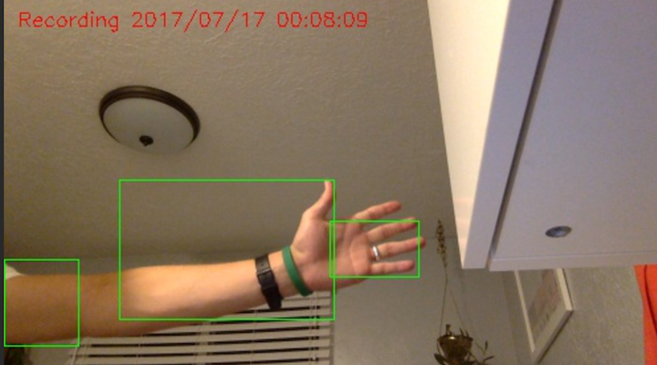
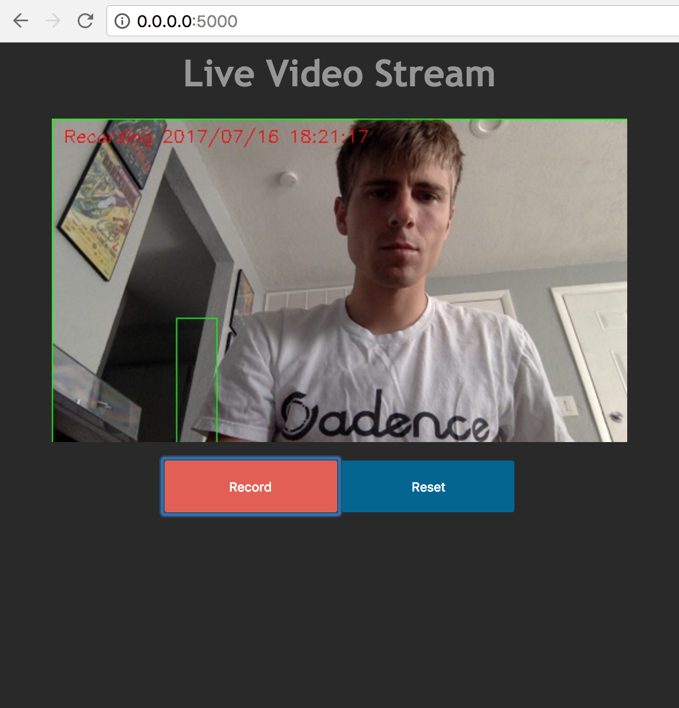
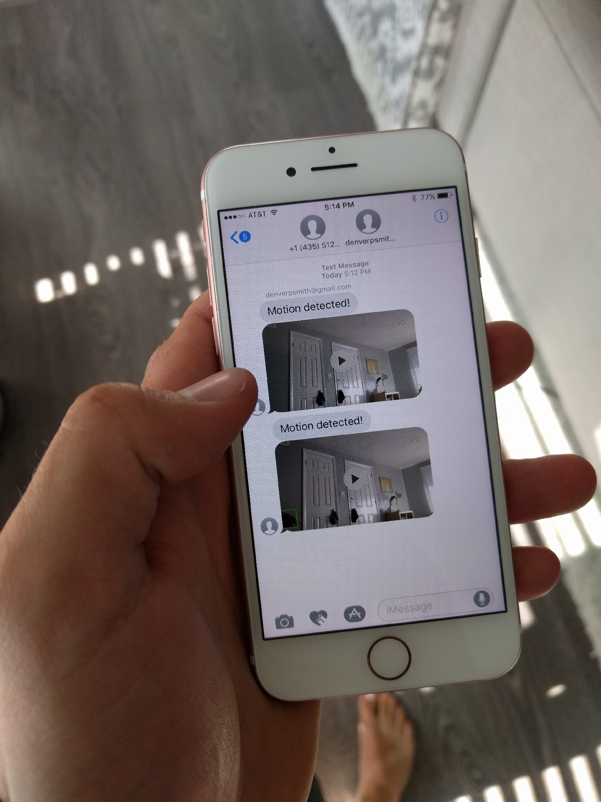

Dang Thieves
My wife and I got a little paranoid about thieves coming into our house. Determined to not spend money on a security camera, I set out to build my own working solution. The Raspberry Pi was an obvious choice for this project. I had not done any video-related programming before, so this was a fun challenge. Here's the requirements for my personal surveillance system:
- Capture video using the Raspberry Pi's camera module
- Motion detection!
- Stream the live video feed to a web page
- Basic controls to manually operate the system remotely from a web browser
- Send SMS text messages with a video attachment when motion is detected
These are pretty standard features for a security system, however, it was kind of a challenge to get it working as I wanted. As I began coding, I found that some of the features were easy to implement on their own, but trying to combine these features was a real challenge. I hope to share some of my solutions and things that I was able to learn. Here's a link to all of the source code on GitHub.
Motion Detection

This is one of those projects that rely heavily on the awesome work that other people have already created. OpenCV is an open source computer vision library. I used the Python version to capture frames from the pi's camera and to determine if something has moved. There's a lot to how this algorithm works behind the scenes, but here are the basics:
I have a get_frame method that is continuously called. Inside this method is where the processing happens. An image frame is read from the camera device:
_, image = self.video.read() # self.video is instance of cv2.VideoCapture(0)
With this image from the video device, I resize it and change the colorspace.
frame = imutils.resize(image, width=500)
gray = cv2.cvtColor(frame, cv2.COLOR_BGR2GRAY)
At this point the frame looks like this:
Then a gaussian blur function is applied to the frame:
gray = cv2.GaussianBlur(gray, (21, 21), 0)
The idea is to compare the contours between two frames. I created an initial frame that is used to compare each new frame against using the absdiff function. It produces a scary ghost-like image that looks like this:
frame_delta = cv2.absdiff(self.initial_frame, gray)
These images are a result of combining the current frame with the initial frame. Finally, using more cv2 image manipulation functions, I end up with an image that looks like this, and represents a difference between the initial frame and the current frame from the camera:
I use this image with the cv2.findContours function to get the contours in the image. I picked the value 500 to use as an indicator that enough change has happened to alert the system that motion has been detected.
(_, contours, _) = cv2.findContours(dilated_threshold.copy(),
cv2.RETR_EXTERNAL,
cv2.CHAIN_APPROX_SIMPLE)
for contour in contours:
contour_area = cv2.contourArea(contour)
if contour_area >= 500:
self.last_movement = current_time
self.movement_detected = True
I learned a lot about this method of detecting motion from the link at the bottom of the page. Check it out for more information.
Streaming Video to the Web

I was so surprised at how difficult it is to stream video to a web page. I think this was the most challenging part of the project, but once I found a solution, everything started to fall into place.
I decided to go with Flask as a web server because (a) I had never used it before, (b) It's very lightweight and easy to set up, and (c) there were good examples online of how to do streaming.
One challenge I ran into towards the end was that I realized my Flask server could only serve one client connection at a time when streaming video. I did some research and learned that you can use gevent to run the server in a way that allows multiple clients to connect asynchronously. To get this to work I had to modify my camera frame generator function to be threaded.
# camera_streamer.py
class CameraStream(object):
"""Stream image frames from a camera source"""
thread = None
stream = None
video_camera = None
def __init__(self, camera_source, *args, **kwargs):
if self.thread is None:
CameraStream.video_camera = camera_source
CameraStream.thread = Thread(target=self.generate)
CameraStream.thread.start()
def request_stream(self):
"""Return current frame from stream"""
return self.stream
@classmethod
def generate(cls):
"""Generate next frame from camera source continuously"""
while True:
cls.stream = cls.video_camera.get_frame()
cls.video_camera = None
cls.stream = None
cls.thread = None
As for the web interface, it's nothing too crazy. An HTML img tag receives frame after frame of encoded JPEG data. In my application this works because Flask allows the usage of a generator function as a response. With the right headers and body you get a nice motion jpeg stream.
def gen(stream_handle):
while True:
response = (
b'--frame\r\n'
b'Content-Type: image/jpeg\r\n\r\n' +
stream_handle.request_stream() +
b'\r\n\r\n'
)
yield response
@app.route('/video_feed')
def video_feed():
return Response(gen(streamer) or None,
mimetype='multipart/x-mixed-replace; boundary=frame')
In the snippet above you can see the generator function that's continuously yielding frames from the camera. The response is formatted with the correct headers and mimetype for the client(s).
Here's the relevant bit of code from index.html
<img src="{{ url_for('video_feed') }}">
The record and reset buttons on the web interface are just async actions that trigger functions to manipulate the video camera.
SMS Text Notifications

To my delight, there's such a thing as an "SMS gateway," which makes sending text messages from a computer program easy. From what I understand, most carriers have an email address that you can send messages to. 1234567890@mms.att.net for example. The carrier routes the message to the mobile phone number provided. If there's an error sending the message, you receive an email instead.
The main issue with sending text messages is the size of the attachment. If it's too big (About 600KB if I am not mistaken) then the message won't be delivered. With that limitation in mind, I set up ffmpeg to limit the video size to about 590KB, which is about 8 seconds. Notifications are sent either once the file size limit has been reached, or as soon as motion is no longer detected.
There's nothing else too intriguing about this part of the code, so I will just link to it here.
Takeaways and Findings
I feel like each feature of this project was pretty simple to do. The real challenge was connecting the pieces to work together. Software that bridges the gap between what's on our computer screens and what's in our physical world is extra exiting to create. Receiving a text message after waving your hand in front of a camera is really cool.
One thing I don't like about this project, or that I would change in the future, is that it requires the web server to be on the same machine as the camera. This isn't ideal because my Raspberry Pi isn't the best web server. In the future, it would be cool to perhaps use ffmpeg to stream the frames from the camera to a remote server.
One of the biggest sources of latency is the crappy wifi dongle I have on my pi. It causes the video to lag behind real-time. I don't think there's much I can do about it other than to use ethernet or buy a nicer wifi dongle.
Finally, if I wanted to make this system more robust, I would add some authentication to the web interface. I wouldn't want anyone just monitoring my camera. I just didn't add this feature because it was beyond the scope of what I was trying to learn and accomplish.
As I began to work on this project, I realized I would have to take advantage of concurrency using threads and processes to perform subtasks. By doing so, I was able to improve the performance as well as the overall quality of the security system. This project has sparked an interest in computer vision for me. I don't know if my wife and I will catch any thieves, but they will not be able to take away the things I've learned from creating this makeshift security camera.

I found these resources very helpful while working on this project: